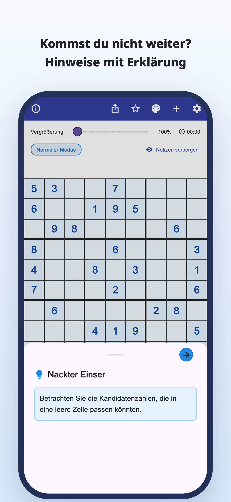
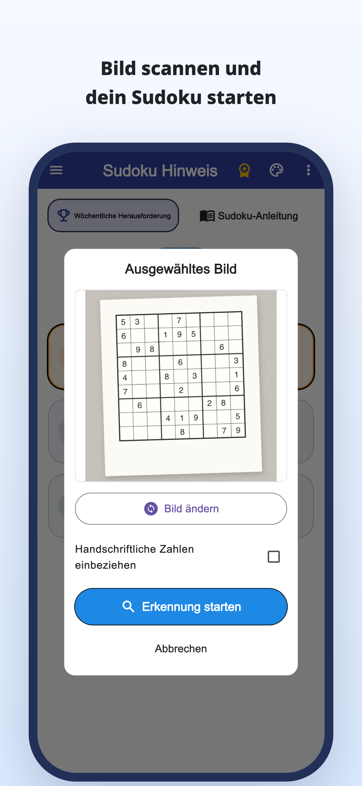
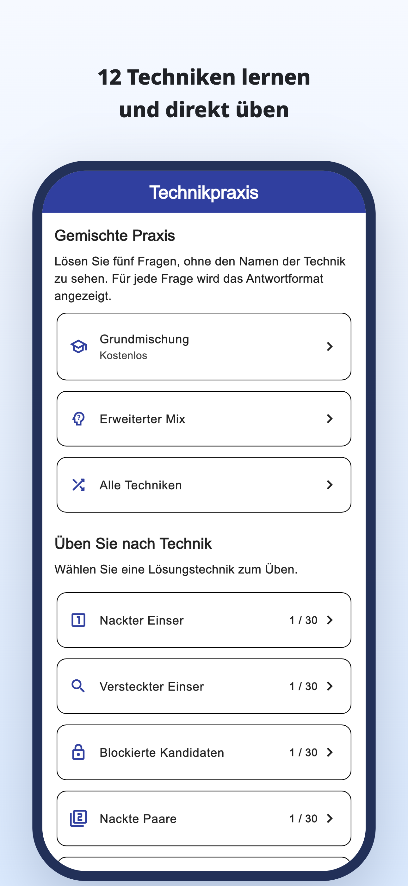
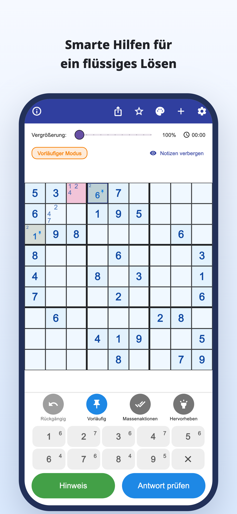
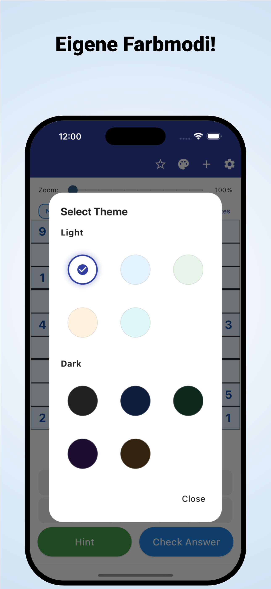

„Wo soll ich als Nächstes suchen?“
Du prüfst das Gitter immer wieder,
kommst aber an derselben Stelle nicht weiter.
Mit der Kamera scannen · Hinweise mit Erklärung
Scanne Rätsel aus Zeitungen und Zeitschriften.
Verstehe, warum eine Zahl passt, und löse selbst weiter.
iPhone & Android / Kostenloser Download · In-App-Käufe





Kommt dir das bekannt vor?
Du prüfst das Gitter immer wieder,
kommst aber an derselben Stelle nicht weiter.
Warum gehört diese Zahl genau dorthin?
Die Lösung abzuschreiben reicht dir nicht.
Du möchtest dein begonnenes Papierrätsel
in der App weiterspielen.
Aus einem Hindernis wird ein Anhaltspunkt
Lies ein Sudoku aus einer Zeitung oder Zeitschrift per Foto ein und spare dir das Eingeben einzelner Zahlen.
Aus einem Bild einlesenLies die Begründung für einen Zug. Nutze sie als Anhaltspunkt für den nächsten Schritt, statt nur die Antwort einzutragen.
Hinweise mit ErklärungEntdecke Erklärungen und Übungen zu einzelnen Techniken und übe, sie selbst zu erkennen.
Techniken übenFür alle, die gern selbst auf die Lösung kommen
Importiere dein gewohntes Rätsel und mache dort weiter, wo du aufgehört hast.
Verstehe die knifflige Stelle und löse anschließend selbst weiter.
Für Einsteiger und alle, die eine weitere Technik lernen möchten.
Lesen · Ausprobieren · Üben
Starte im Browser.
Lies einen Leitfaden oder spiele ein ganzes Rätsel.
Von Kandidatennotizen bis zu Technik-Erklärungen und Übungen.
Löse ein ganzes Rätsel mit Hinweisen, wenn du sie brauchst.
Entdecke die Regeln und den Spaß am Verknüpfen von Hinweisen.
Schau auf das blau umrandete Feld und öffne den Hinweis.
Hinweis zum nächsten Zug
Prüfe die Kandidaten eines leeren Feldes.
Dieses Web-Beispiel zeigt einen Lösungsschritt. Die Darstellung in der App ist anders.
Wenn du beim Sudoku festhängst.
Sudoku Hinweis herunterladen
Kostenloser Download · In-App-Käufe
Download und Ausprobieren sind kostenlos. Hinweise, Antwortprüfungen und Bildscans sind begrenzt; für manche Nutzungen ist ein Werbevideo nötig.
Premium ist ein Monats- oder Jahresabo. Es entfernt Werbung und ermöglicht unbegrenzte Hinweise und Antwortprüfungen. Bildscans bleiben auch mit Premium begrenzt. Preise und Bedingungen findest du in der App.
Importiere ein Foto deines Sudokus. Prüfe die erkannten Zahlen und korrigiere Fehler vor dem Start. Klassische 9×9-Sudokus werden unterstützt.
Die App enthält Rätsel sowie Erklärungen und Übungen zu Techniken. Einige Rätsel und Übungen erfordern Premium.
Neben dieser Ein-Schritt-Demo kannst du im Browser ein ganzes Rätsel spielen und Technik-Anleitungen sowie Übungen ausprobieren.
Sudoku-Ratgeber